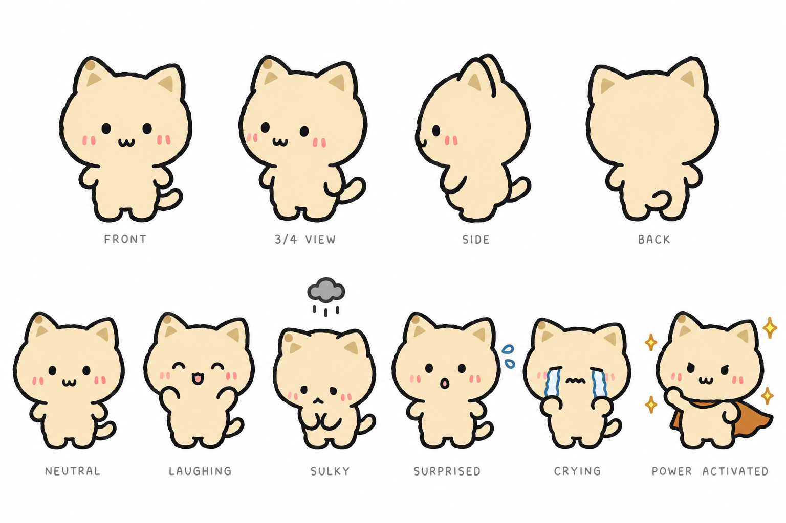
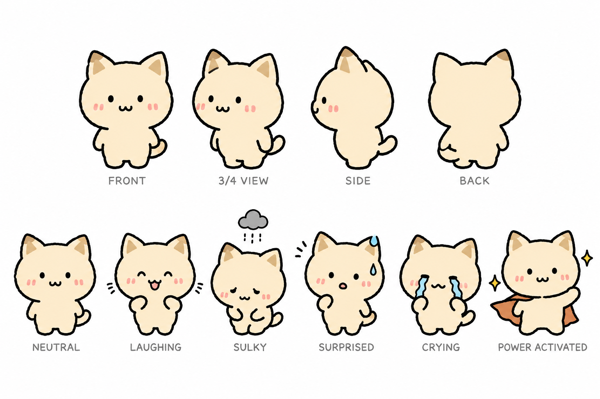
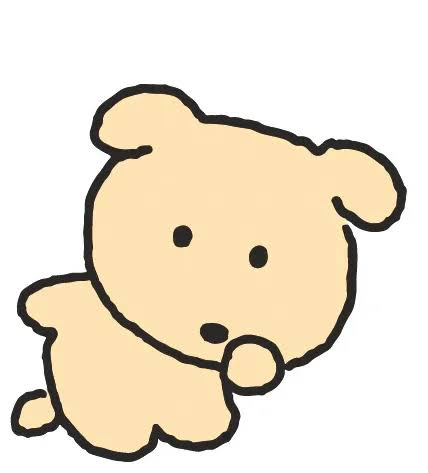
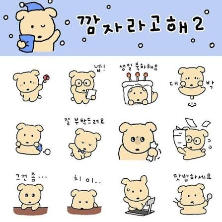
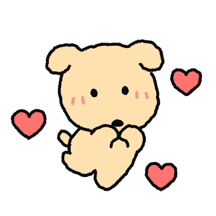
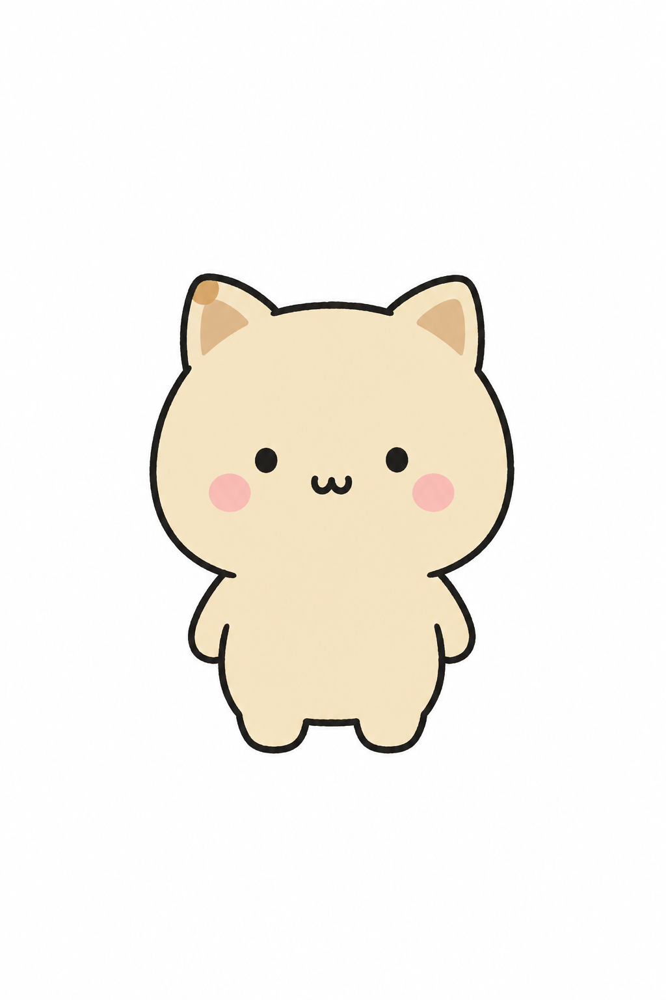

보리 캐릭터 시트 — medium vs high
gpt-image-2.5-sunburst · 1536×1024 · 깜자 3장을 스타일 레퍼런스로 입력 (edits 엔드포인트) · 프롬프트: bori-sheet-prompt.txt
HIGH — 1,372 출력 토큰 · $0.058 · 29초

MEDIUM — 343 출력 토큰 · $0.027 · 18초

스타일 레퍼런스 (깜자 · 조빔스튜디오)



이전: 레퍼런스 없이 텍스트만 · 정면 1컷 · medium
